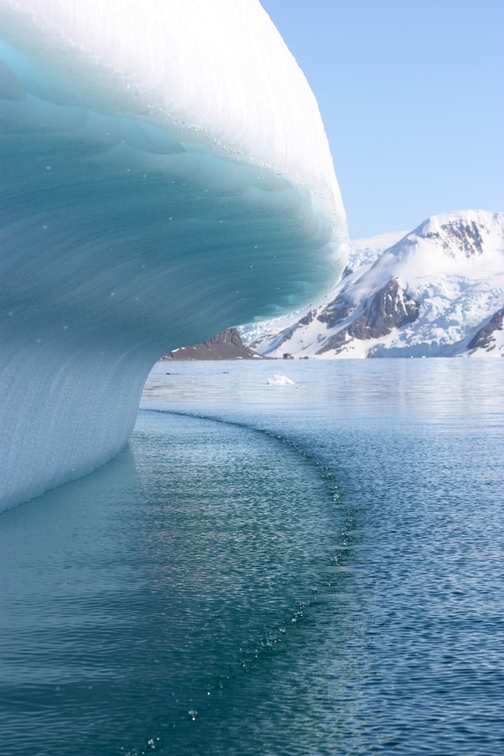
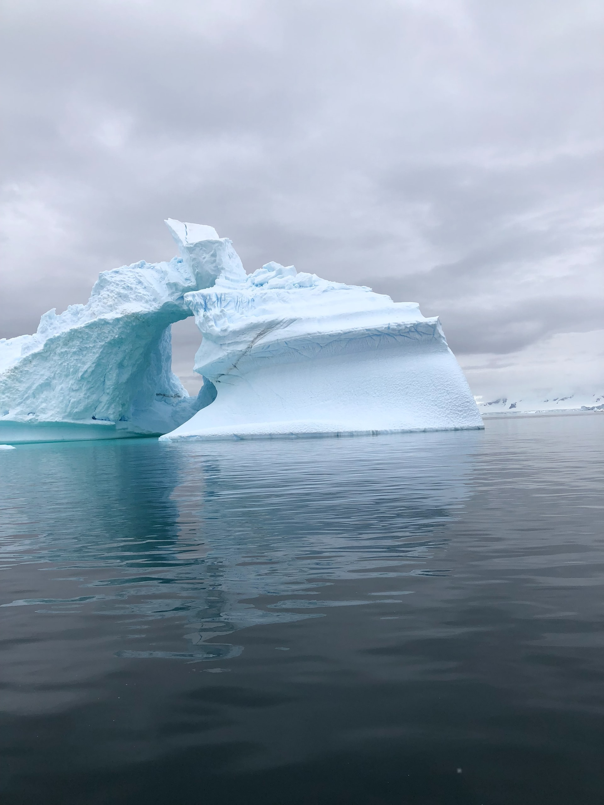
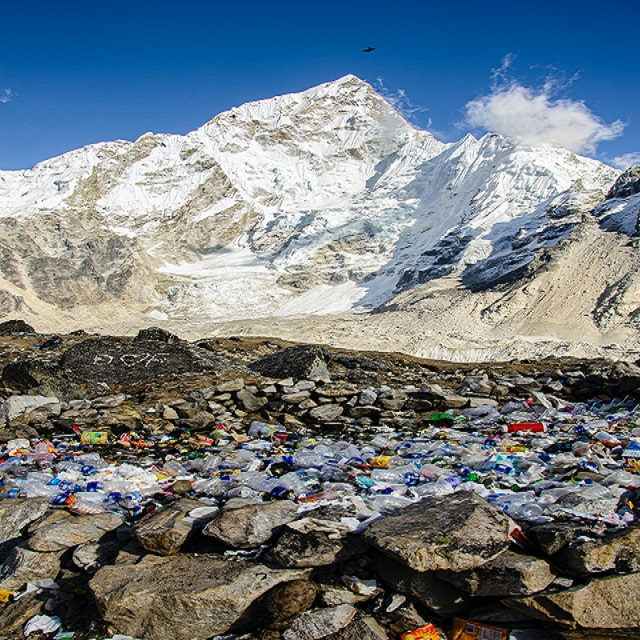
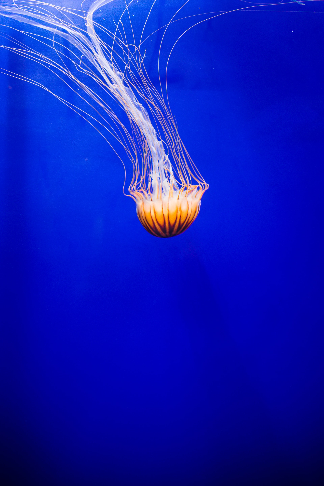
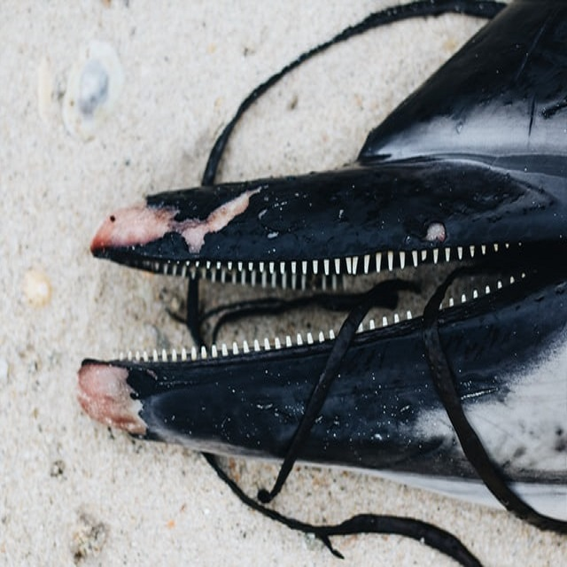

La disparition du sable est un problème dont on commence à parler car il menace les rivages. Chaque seconde ce sont kilos de sable marin qui sont extraits des plages, soit 75 millions de tonnes par an, essentiellement pour la construction. En France, ce sont 3 millions de tonnes de granulats marin (autrement dit du sable) qui sont extraits : environ un quart du littoral français est touché. En Floride, ce sont 9 plages sur 10 qui ont déjà disparu. Puces électroniques, plastique, et surtout matériaux de construction : matière première bon marché, le sable est partout. Si le sable des déserts reste impropre à la construction, les magnats du bâtiment se sont massivement tournés vers l’exploitation des rivières et plages, au détriment de l’équilibre des écosystèmes. Petit à petit, les appétits économiques ont grignoté au moins 75 % des plages du monde, et englouti des îles entières. Il s'agit d'un pillage écologique mêlant multinationales et réseaux mafieux (au Maroc et au Sénégal, la mafia contrôle près de 45% du sable). retour haut de page
Plage de La luna en Bolilagne:
La mer relâche tous ses détrituts lors du passage de la marée haute.
Mont Rapoutsky en Nordland:
Des tonnes de détrituts se sont amassés après la fonte des glaciers.
En plein milieu de l'Océan Parindien:
des plastiques piègent les poissons et polluent les fonds marins.
Plage de la pitance en Tchéréquie:
un dophin a agonisé après s'être enlisé dans des fils de pêche.
Les océans ont une énorme importance pour la vie sur notre planète. Ils permettent de maintenir un équilibre environnemental puisqu’ils régularisent le climat mondial et, grâce aux courants et aux vents, des échanges de gaz et de chaleur sont faits avec l’atmosphère. De plus, ils couvrent plus de la moitié de la surface de la Terre. De nos jours, la destruction des fonds marins met de plus en plus en danger la vie sous l’eau et le cycle alimentaire qui y est rattaché. Parce qu’on traîne un lourd et énorme filet pour la pêche, plusieurs espèces sont éliminées et leur habitat en souffre aussi. C’est dans leur lieu de protection qu’elles trouvent tout ce dont elles ont besoin pour se nourrir. De plus, elles assurent notre survie, car elles font partie de notre réseau trophique (l’ensemble des chaînes alimentaires). Le chalutage laisse des sédiments, parfois toxiques, lorsque les roues métalliques frottent les fonds. Ceci est très défavorable pour la vie marine. Le chalutage est comparable à l’action d’un bulldozer dans un jardin, a mentionné le chercheur de l’université d’Hawaï, Les Watling. Cela démontre que cette action est très dévastatrice. La biodiversité est réduite de moitié là où on pratique le chalutage. Lors d’une seule utilisation de cette technique, les sols marins peuvent être anéantis sur une longueur de 4 km. La grosseur de l’instrument manipulé pour la récolte des poissons peut équivaloir à la grandeur d’un terrain de rugby. Plusieurs cicatrices sont laissées et elles seront permanentes. Le filet peut englober certaines espèces qui ne sont pas ciblées. Ces prises ne seront pourtant pas remises vivantes à l’eau. Cela mène à l’augmentation du taux d’extinction des populations marines. Il y a déjà des espèces importantes qui s’éteignent peu à peu, comme le grand requin blanc et la tortue luth. Nous devrons agir concernant ce danger qui pourrait, dans l’avenir, tous nous toucher en affectant les réseaux trophiques de la planète. La vie sur Terre a mis des milliards d’années à se bâtir, puis nous, qui ne sommes que de passage, détruisons ce qui ne nous appartient pas.